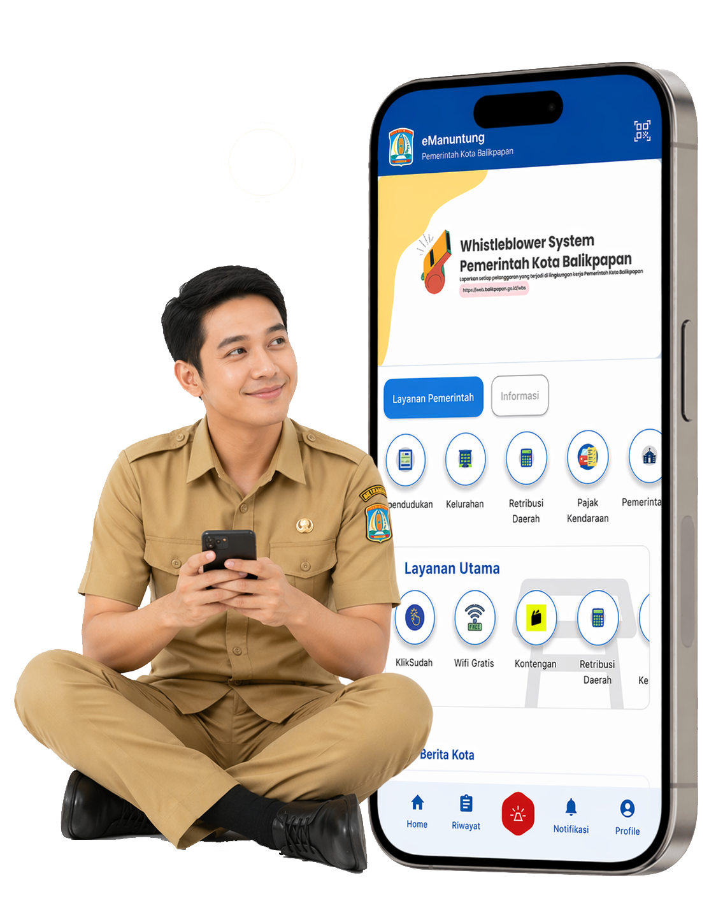

Satu platform terpadu untuk seluruh kebutuhan ASN Balikpapan — dari pelaporan kinerja, presensi GPS, pengelolaan surat, hingga akses data kepegawaian secara real-time.

Berbagai fitur terintegrasi untuk mendukung kinerja dan layanan kepegawaian ASN Kota Balikpapan — semuanya dalam genggaman.
Integrasi pelaporan kinerja ASN secara digital dan real-time.
Persuratan elektronik yang cepat dan efisien antar instansi.
Presensi berbasis GPS yang akurat dan terverifikasi otomatis.
Manajemen jadwal dan presensi event kegiatan dinas secara real-time.
Email resmi ASN terintegrasi dalam satu platform terpadu.
Data ASN terintegrasi dan lengkap, dapat diakses kapan saja.
eManuntung mengintegrasikan berbagai kebutuhan ASN Kota Balikpapan dalam satu platform. Dari pelaporan kinerja hingga presensi GPS, terhubung langsung dengan sistem nasional BKN.
2021
BKPSDM memulai kajian dan perancangan portal kepegawaian digital pertama Kota Balikpapan.
2022
eManuntung resmi diluncurkan dan mulai digunakan ASN di seluruh SKPD Kota Balikpapan.
2024
Penambahan Presensi GPS, eKinerja, Email ASN, dan integrasi penuh dengan sistem BKN.
2026 — Sekarang
6 layanan terintegrasi, melayani lebih dari 6.000 ASN dan mendukung smart city Balikpapan.
"Lebih dari sekadar aplikasi — eManuntung adalah komitmen untuk melayani lebih baik, setiap hari."
Tersedia di Google Play Store dan App Store. Akses layanan kepegawaian kapan saja, di mana saja.